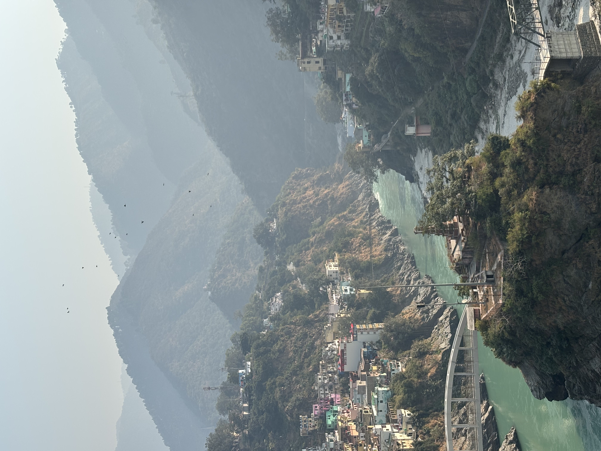
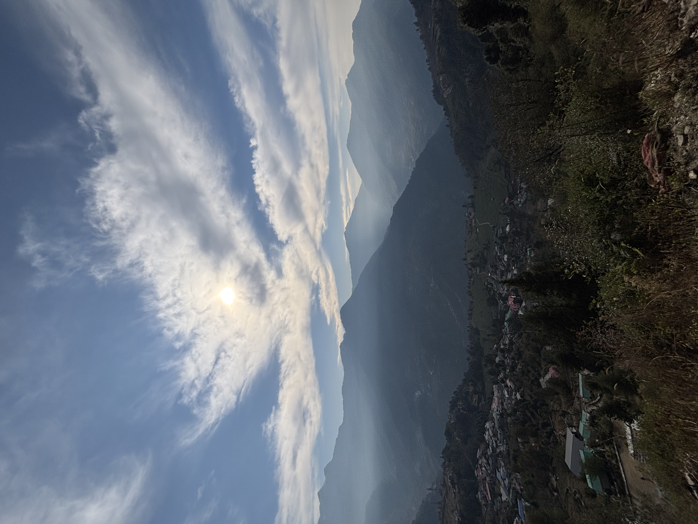
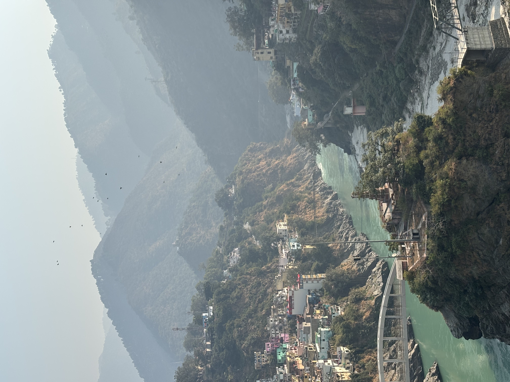
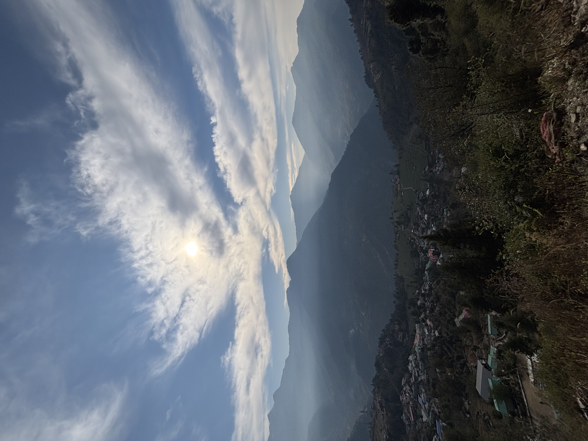
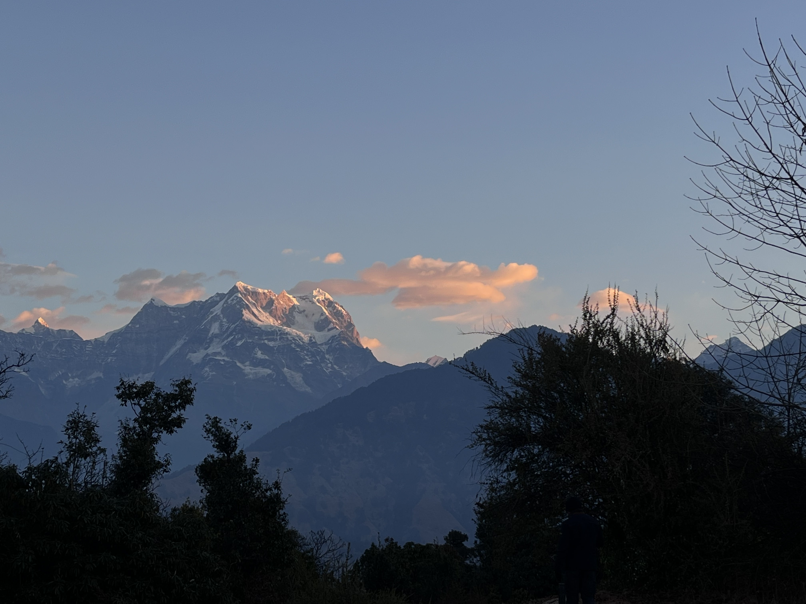
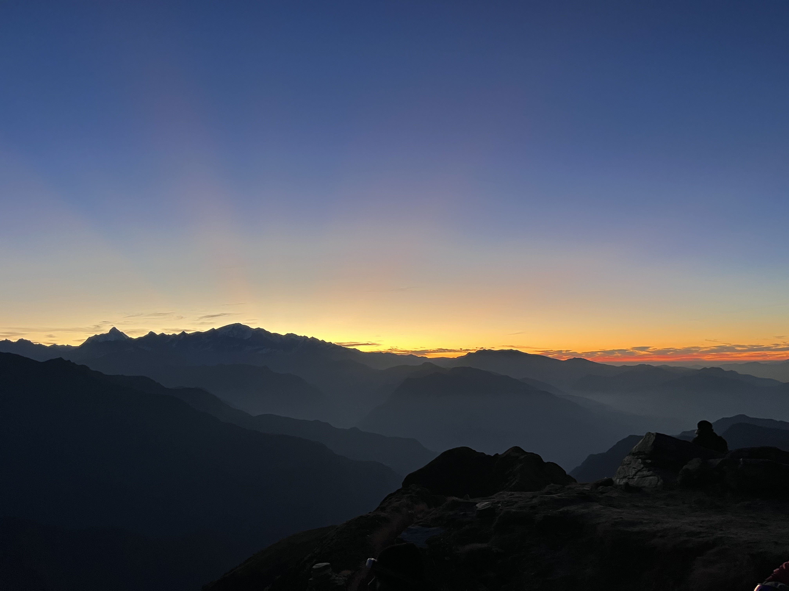
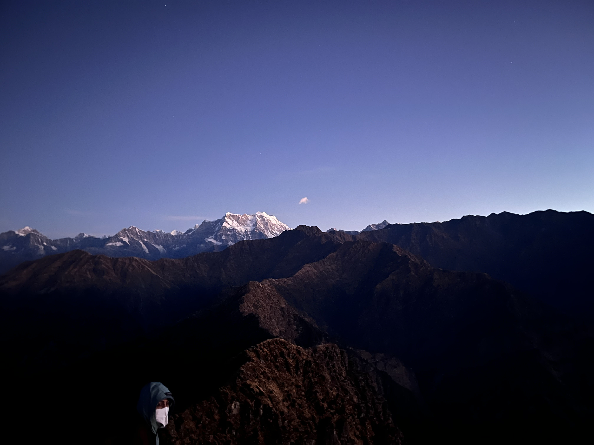
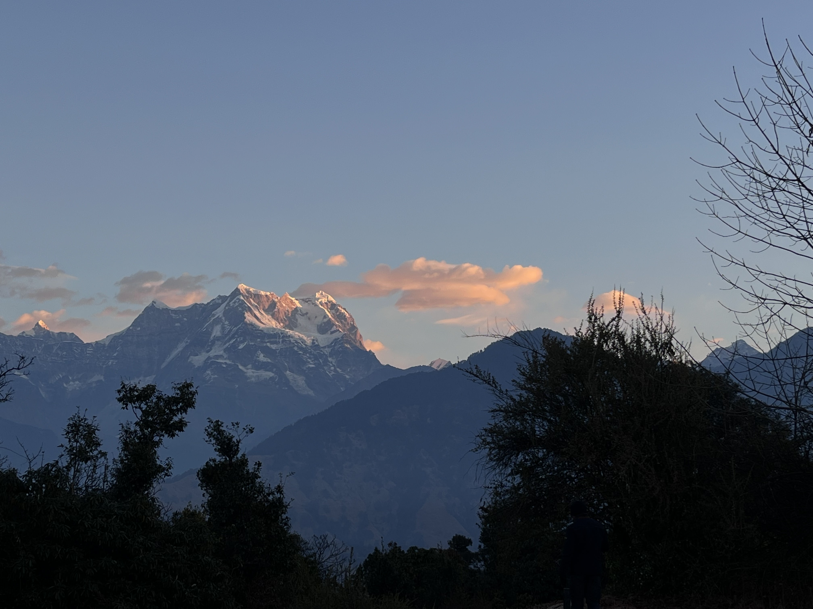
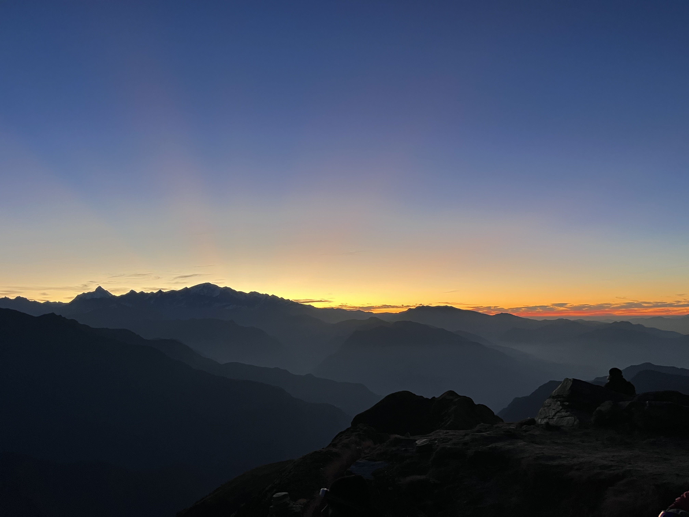
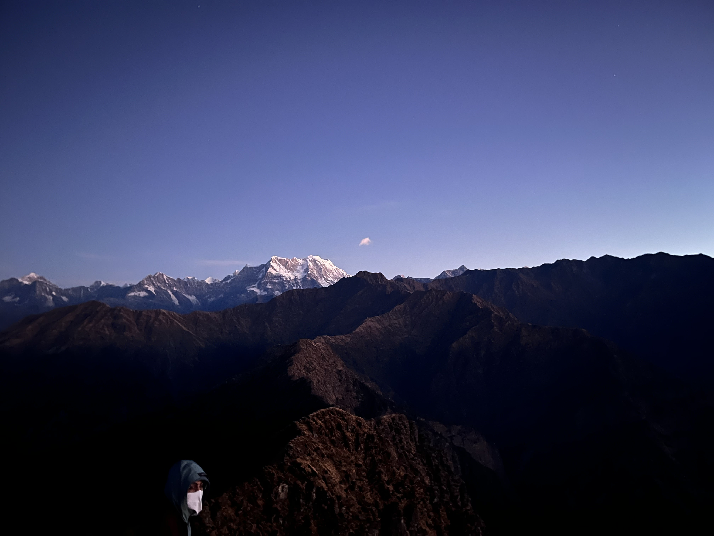

My experience and learnings from my first trek
Dec 29, 2025 | 5 min read
Trekking is something I always wanted to try because of two reasons – to experience closure with nature in this urban lifestyle and to welcome new experiences in the form of discomfort. Or try my hand at ‘lifemaxxing’. Since school, I always perceived trekking as a life changing experience. Till 2nd year of college under the AQI, I realised it could be a life saving experience. Eitherways, I knew it was happening but was unsure of when. Even when I go a few months back, I can find myself being self-reflective by blaming this jarring generation where nobody respects nature. This is the semester where I hardly attended three EVS classes by the way. What was the solution? Trekking. Did I ever take the effort to plan one out for myself? No.
That is where my homies came in. Invited me for the trek. Planned the whole thing from start to end. Asked me for payment in between. Again, did more planning. Dragged me along the journey. But that feeling of standing at the Chandrashila peak, with the view of a flaming orange strip behind the mountain teaching the sky how to lighten its shade of blue. That was the moment we trekked 3.5 hours for. The peak really stood true to the meaning of its name - Moonstone, as I saw the moon fading away. My view definitely changed, but the peace and silence in my mind were constant. Till the arrival of this moment, there were a few learnings I absorbed.
1. Adapting in life is important
I was told I was going to be exposed to a negative temperature. If so, it was going to be my first time. Even though it didn’t touch a negative figure, it was pretty damn cold for someone who enjoys summer. Hands would go numb after being under water, toes would feel inserted with needles despite wearing woolen socks and amidst all this, Vatsl and Shrimal would touch me with bare hands while changing. Regardless, I had to go through it all and by the time I came back to the Delhi winter, I somehow didn’t feel as cold. Life can throw anything at us, but the only thing under our control is our attitude. And that plays a crucial role when it comes to us deciding the trajectory of our lives. I link this to one thing my Maa told me - “You should be equally comfortable sleeping in the Taj hotel and on the footpath”. It stayed with me during the trek haha.
2. Respect time
It is important to be punctual on a trek, as time correlates with the views you can experience. There is no point in leaving to see the sunset at 7 pm. Apart from that, I figured it is also just a way to stay in sync with my trek group and not be the reason for unnecessary delay. So, your punctuality is a form of respect for others who you make plans with. I usually have a habit of reaching 5 minutes after the decided time. I am going to try to cut that 10 mins and reach 5 minutes earlier. Secondly, waking up early is a life hack. I know this is the most cliche advice ever, but it hides so much value. I was not the earliest riser in the group, and I had to be pulled out of bed (the temperature inside the blanket was too good). We would wake up at 5 or 6 am, and 11 am would feel like 3 pm. I felt provided with so much extra time, I just thought of how much of an amazing use I can put this to. Shrimal thought he could conquer the world, and I don’t disagree.
3. You need lesser in life than you think
For the first time ever, I packed minimally. That too for my first trek. I didn’t pack everything I could but instead, I packed everything I needed after envisioning and asking Deshu (an active trekker) and considering all possible situations. It was a risky move but it played out well. The rucksack on my back didn’t irritate me with overweightedness. While packing, we think of what is essential, what is precaution, and what we are afraid to lose. I think life pretty much plays out the same way. We all have desires and there is nothing wrong with that. But what I have realised is there is no end to it. A new iPhone is always coming out. There is always a new sneaker. I used to disguise my desires as necessities. Well in reality, we only need a bit to function. But obviously, a few fun purchases here and there aren’t harmful.
4. Get closer to nature
Building upon how little we need to function, we are really insignificant. Trekking through the mountains and seeing the view did make me feel like I am on top of the world. Simultaneously, it is important to know how it takes just one slip for mother nature to make you a part of her family. My point is we really underestimate nature. Going on this trek made me appreciate the beauty of our world. The sunrises, the sunsets, the shooting stars, they were all surreal. All of these landscapes really made me ponder my existence. I am so small. But while I am at it, I might as well make some good use of my existence and make an impact that positively benefits someone, if not all. This can be an attempt at trying to feel at level with nature i guess haha. That is the way nature inspired me in a way. I think this experience can be enhanced if we practice silence as a virtue. Stop thinking, and just connect. You might experience some peace, depth and reflection.
5. It’s the people
I feel like this one is a very personalized learning and might not apply to all. I am all in for a solo trek but one with your homies just hits different. The overall struggle of the trek felt shared which made it easier for me. I knew I was not alone in this. At the same time FOMO played out well, as I didn’t want to miss out on any experience. As I was the youngest, I needed some pampering but I think I was well behaved with my seniors haha. The trek also made me feel closer to them, a closeness I felt I lost a bit with them before. I think the bond wouldn’t strengthen the same way in an urban setting as it did on the trek. The conversations just felt much realer and raw there. I also met new people on the trek that I think gave me a much needed new exposure to new perspectives and experiences. So I guess one takeaway from here is to make conversation. Doesn’t matter if you know the person or not. But thank you Vatsl, Deshu, Stavan, Pranav and Shrimal for taking me on this trek with you all. And big shoutout to Chandan bhaiya and Vicky bhaiya, our trek guides for giving us this awesome experience.
100% recommend everyone to go on a trek. I think I have started to develop the trekker identity and I intend on going on one trek yearly. Let’s see how this plays out. This is the trek I went on: Chopta Chandrashila Deorital Trek
Okay, I wrote one blog on my website before the year ended! Happy new year and thank you for reading. Rushing while listening to In Dino because I got baingan ka bharta waiting for me.
 



 




